tIc-f -k¿°m¿
hnZym-`ym-k- h-Ip∏v
Xbm-dm-°n-bXv
kwÿm\ hnZym-`ymk Kth-jW ]cn-io-e\ kanXn (SCERT), tIcfw
2016
Ãm≥tU¿Uv V
kmaq-ly-imkv{Xw
kmaq-ly-imkv{Xw
kmaq-ly-imkv{Xw
`mKw 1
`mKw 1
`mKw 1
KT 103-1/Soc. Science-5(M) Vol-1
Page 1
Page 2
P\-K-W-a-\- -A-[n-\m-bI Pbtl
`mc-X -`m-Ky-hn-[mXm,
]©m-_-kn‘p KpP-dmØ admTm
{ZmhnU DXv°-e- _w-Km,
hn‘y-ln-am-N-e -b-ap\mKwKm,
D—e Pe-[nX-cwKm,
Xh-ip-`-\mta PmtK,
Xh-ip` Bin-j -am-tK,
Kmtl Xh- P-b- KmYm
P\-K-W-aw-K-e-Zm-bI Pbtl
`mc-X- `m-Ky-hn-[mXm.
Pb-tl, Pb-tl, Pb-tl,
Pb Pb Pb Pbtl!
C¥y Fs‚ cmPy-am-Wv. F√m C¥y-°mcpw Fs‚
ktlm-Z-co-ktlmZc-∑m-cm-Wv.
Rm≥
Fs‚
cmPysØ
kvt\ln-°p∂p;
kºq¿Whpw sshhn-[y-]q¿W-hp-amb AXns‚ ]mc-
º-cy-Øn¬ Rm≥ A`n-am\w sIm≈p∂p.
Rm≥ Fs‚ amXm-]n-Xm-°-sfbpw Kpcp-°-∑m-scbpw
apXn¿∂-hscbpw _lp-am-\n-°pw.
Rm≥ Fs‚ cmPy-Øn-s‚bpw Fs‚ \m´p-Im-cp-
sSbpw t£a-Øn\pw sFiz-cy-Øn-\pw-th≠n
{]bXv\n°pw.
State Council of Educational Research and Training (SCERT)
Poojappura, Thiruvananthapuram 695 012, Kerala
Website : www.scertkerala.gov.in
E mail : scertkerala@gmail.com
Phone : 0471 - 2341883, Fax : 0471 - 2341869
Typesetting and Layout : SCERT
First Edition : 2014, Reprint : 2016
Printed at : KBPS, Kakkanad, Kochi-30
© Department of Education, Government of Kerala
tZio-b-Km\w
{]Xn⁄
Page 3
{]nb-s∏´ Ip´n-Itf,
hy‡n°v kaq-l-tØmSpw {]Ir-Xn-tbm-Sp-ap≈ _‘-
amWv kmaq-lyim-kv{X-Øns‚ ]T-\-ta-J-e. \ΩpsS
kwkvIm-c-Øn-s‚bpw \mK-cn-I-X-bp-sSbpw ]nd-hn°v
\nZm\w a\p-jy-cpsS kwL-t_m-[hpw A[zm-\-hp-am-Wv.
kmaq-lnI Pohn-X-Øns‚ Btcm-Ky-I-c-amb \ne-\n-
ev]n\pw `{Z-Xbv°pw Hcp-a-tbm-Sp≈ {]h¿Ø-\--߃
IqSntb Xocq. amdp∂ Ime-Øns‚ sh√p-hn-fn-Isf
ka¿Y-ambn t\cn-Sm\pw Icp-X-temsS apt∂m-´p-t]m-
Im\pw kmaq-lyim-kv{X--]-T\w klm-bn-°pw. DØa
]uc-\mbn hf-cp-∂-Xn\pw kaq-l-\-∑-bv°mbn {]h¿Øn-
°p-∂-Xn-\p-ap≈ Adnhpw at\m-`m-hhpw ss\]p-Wn-
Ifpw hnI-kn-°m≥ Cu ]T\w D]-I-cn°pw.
Cu taJ-e-bn¬ IqSp-X¬ At\z-j-W-߃ \S-Øm\pw
Ah kmaq-lnI ]ptcm-K-Xn°v {Inbm-fl-I-ambn {]tbm-
P-\-s∏-Sp-Øm\pw km[n-°p-sa∂v {]Xym-in-°p-∂p.
kvt\lm-iw-k-I-tfmsS,
tUm. ]n. F. ^mØna
Ub-d-IvS¿
Fkv.-kn.-C.-B¿.Sn.
Page 4
]mT-]p-kvXI cN\m kanXn
PbIr-jvW≥ H.sI.
sI.]n.-kn.-F-®v.-F-kv.-F-kv.,
]´-m∂q¿ ]n.H., ]´-m∂q¿, IÆq¿
\nim¥v taml≥ Fw.
F®v.F-kv.-F-kv.-‰n.
Kh. tKƒkv F®v.-F-kv.-Fkv., Ic-a\,
Xncp-h\-¥]-pcw
\nj Fw.Fkv.
bp.]n.-Fkv.F., ]n.F®v.Fkv.-Fkv.,
sagp-then, ]Ø-\w-Xn-´
cmP≥ sI.
Pn.bp.-]n.-F-kv., Xncp-hm-gn-tbmSv, ]me-°mSv
F≥. kpIp-am-c≥
Kh. hn & F®v.-F-kv.-Fkv. t^m¿ tKƒkv,
aW-°m-Sv, Xncp-h-\-¥-]pcw
h¿Kokv t]mØ≥
F®v.-Fkv.Fkv.‰n , sk‚v tPm¨kv F®v.-F-
kv.-F-kv. a‰w, amth-en-°c
bqk^v Ipam¿ F v.Fw.
F®v.-F-kv.-F-kv.‰n.
Pn.Fw.-_n.-F-®v.-F-kv.-Fkv., B‰n-߬
A_vZpƒ lao-Zv. hn.
F®v.-F-kv.-F., Fw.bp.-Fw.-hn.-F-®v.-Fkv.,
hS-I-c, tImgnt°mSv
A_vZpƒ kaZv sI.kn.
F®v.-F-kv.-F-kv.‰n.
Kh.F®v.-F-kv., hS-I-c, ]pXq¿ (]n.H.),
tImgn-t°mSv
Nn{Xm am[-h≥
dnk¿®v Hm^o-k¿, Fkv.-kn.-C.-B¿.Sn.
Cui hn.sI.
bp.]n.-F-kv.-F., F.Fw.-F¬.-]n.-Fkv.,
sh´n-°m-Sv, s]cn-¥¬aÆ, ae-∏pdw
tKm]-Ip-am¿ Pn.]n.
eIvN-d¿, Ub‰v, sIm√w
lcn {]Zo-]v Fkv.
F®v. Fkv.-F, Fkv.-hn.-F-®v.-Fkv., ]p√m-Sv,
Xncp-h√
lcn hn.
bp.]n.-F-kv.-F, bqWn‰n F.bp.-]n.-Fkv.,
tX≥Ic
hnZ-Kv≤¿
tUm. A_vZpƒ dkm-Iv ]n.]n.
Atkm-kn-tb‰v s{]m^-k¿,
Un∏m¿´vsa‚v Hm^v lnÃ-dn,
]n.F-kv.Fw.H tImtf-Pv, Xncq-c-ßmSn
tUm. F≥.-]n. lm^nkv apl-ΩZv,
Atkm-kn-tb‰v s{]m^-k¿ (dn´.),
Un∏m¿´vsa‚v Hm^v tkmtjym-fPn,
^dq°v tImtfPv, tImgn-t°mSv
alm-enw-Kw Fkv.
Atkm-kn-tb‰v s{]m^-k¿ (dn´.),
Un∏m¿´vsa‚v Hm^v tPym{K-^n, Kh. tImtfPv,
Nn‰q¿
]n.Fkv. at\mPv Ipam¿
Akn-Âv s{]m^-k¿, Un∏m¿´vsa‚v Hm^v
lnÃdn, sI.sI.Sn.Fw. tImtf-Pv,
sImSp-ß-√q¿, Xriq¿
tUm. ‰n \oe-I-WvT≥
Atkm-kn-tb‰v s{]m^-k¿
Un∏m¿´vsa‚v Hm^v tPym{K-^n,
bqWn-th-gvkn‰n tImtf-Pv, Xncp-h-\-¥-]pcw
tUm. {]ntb-jv Fw.
Akn-Âv s{]m^-k¿,
Un∏m¿´vsa‚v Hm^v C°-tWm-an-Ivkv,
bqWn-th-gvkn‰n tImtf-Pv, Xncp-h-\-¥-]pcw
tUm. thWptaml≥
Akn-Âv s{]m^-k¿,
Un∏m¿´vsa‚v Hm^v lnÃdn,
Kh. tImtfPv, s\Sp-a-ßmSv
A°m-Z-anIv tIm˛Hm¿Unt\‰¿
tUm. F≥. Ie, dnk¿®v Hm^o-k¿, Fkv.-kn.C.-B¿.Sn.
Page 5
D≈-S°w
1. 1. 1. 1. 1. Ncn-{X-Øn-te°v
-
7
2.
2. 2.
2. 2. I√n¬\n∂v teml-Øn-te°v
-
18
3. 3. 3. 3. 3. \ΩpsS IpSpw_w
-
29
4.
4.
4.
4.
4. Icp-X-temsS sNe-hn-Smw
-
39
5.5.5.5.5. {]]©w F∂ alm-¤pXw
-
49
6.
6. 6.
6. 6. h≥I-c-Ifpw kap-{Z-ßfpw
-
61
Page 6

Cu ]pkvXIØn¬ Nne Nn”߃
kuIcyØn\mbn D]tbmKn®ncn°p∂p
XpS¿{]h¿Ø\߃
hnebncpØmw
{][m\ ]T\t\´ßfn¬ s]Sp∂h
kw{Klw
]T-\- ]p-tcm-KXn \n¿W-bn-°p∂ tNmZy-߃
A[nIhmb\bv°v ˛ hnebncpØen\v
hnt[bamt°≠Xn√
Page 7
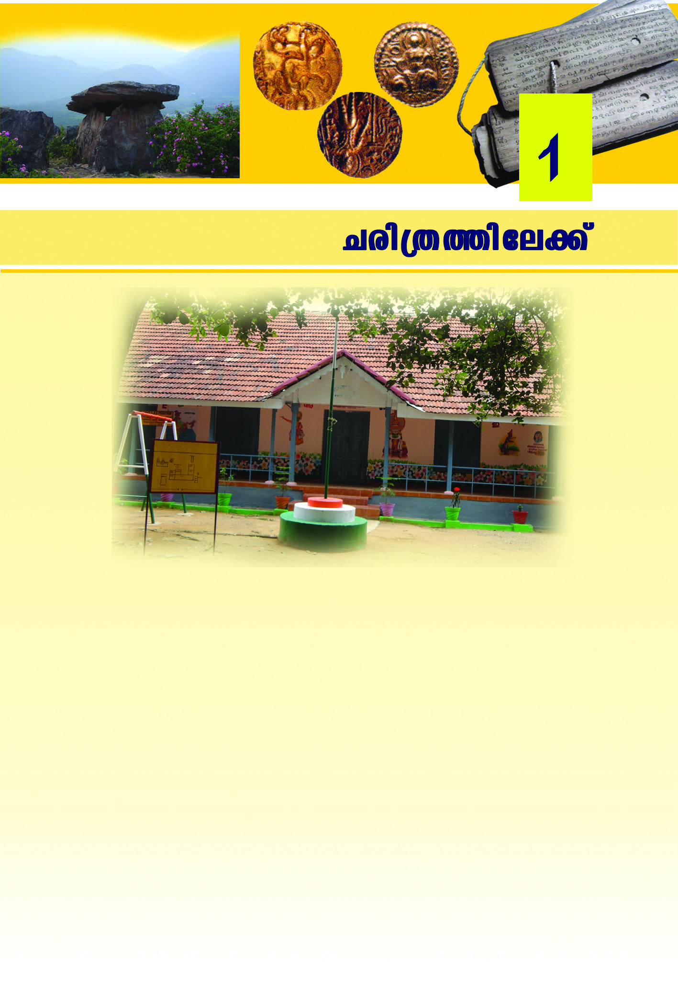
Ncn-{X-Øn-te°v
Ncn-{X-Øn-te°v
7
Hcp hnZym-e-b-Øns‚ Nn{X-am-WnXv. CXp-t]m-eps≈mcp hnZyme-b-Øn-
et√ \nßfpw ]Tn-°p-∂-Xv. \nß-fpsS hnZym-ebsØ°p-dn®v [mcmfw
Imcy-߃ Adnbm-at√m. Ah Fgp-Xn-t\m°p.
$
{]Yam[ym-]nIbpsS/{]Y-am[ym-]-Is‚ t]cv
$
Ip´n-I-fpsS FÆw
$
A[ym-]-I-cpsS FÆw
$
A[ym-]-I-cpsS t]cp-Iƒ
$
sse{_dn/et_m-d-´dn/Iºyq-´¿ em_v kuI-cy-߃
$
Ifn-ÿeØns‚ e`yX
$
sI´n-S-ß-fpsS FÆw
$
hnZym-ebw ÿnXn sNøp∂ {]tZiw
(Pn√, Xmeq-°v, hnt√-Pv, k¿tΔ \-º¿)
$
]©m-bØv/ap≥kn-∏m-en‰n/tIm¿∏-td-j≥
Page 8
kmaq-ly-imkv{Xw V
kmaq-ly-imkv{Xw V
8
e`n® hnh-c-߃ Dƒs∏-SpØn Ipdn∏v Xbm-dm°n ¢mkn¬ hmbn°p.
N¿®sNøp.
Is≠Ømw cNn°mw
C\n hnZym-e-b-Øns‚ Ign™ Ime-sØ-°p-dn-®p≈ hnh-c-߃ IqSn
tiJ-cn-°mw.
Fs¥√mw hnh-c-ß-fmWv At\z-jn-t°-≠Xv?
$
hnZymebw Bcw-`n® h¿jw
$
ap≥Ime A[ym-]-I¿
$
]q¿hhnZym¿Yn-Iƒ
$
Bcw-`-Im-esØ sI´n-S-߃
$
]n¬°m-e-Øp-≠mb am‰-߃
$
$
Cu hnh-c-߃ Fhn-sS-\n∂v In´pw?
Nne-sX√mw \n߃°p Xs∂ Is≠-Øm≥ Ign-bpw. Xmsg- ]-d-bp∂
kqN-\-Iƒ AXn-\p-]-I-cn-°pw:
$
hnZym-e-b-Øns‚ t]sc-gp-Xnb t_m¿Uv
$
Nph-cn¬ ]Xn-∏n-®n-´p≈ ^eIw
$
kvIqƒ Ubdn
$
hm¿jnI kph-\o¿
$
]gb lmP¿ ]pkvX-I-߃
$
AUvan-j≥ cPn-ÿ
Nne hnh-c-߃ \ap°v tNmZn®v a\-kn-em-°mw. Bsc-sb√mw
kao]n°mw?
$
kvIqfns‚ kao-]-Øp≈ apXn¿∂-h¿
$
]q¿hhn-Zym¿Yn-Iƒ
$
]n.‰n.F. {]Xn-\n-[n-Iƒ
C\nbpw hnh-c-߃ Bh-iy-apt≠m?
$
sF‰n@kvIqfns‚
kvIqƒhn°nbn¬\n∂v
hnhc߃
tiJcn°mhp∂XmWv.
Page 9
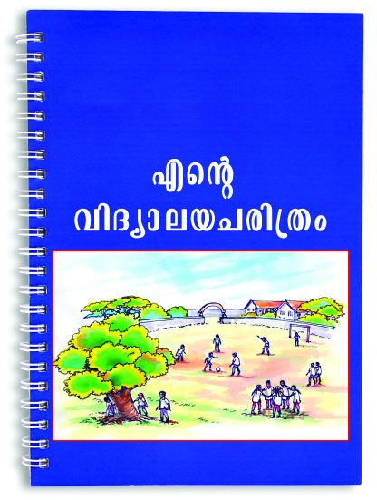
Ncn-{X-Øn-te°v
Ncn-{X-Øn-te°v
9
hnZym-e-b-sØ-°pdn®v tiJ-cn® hnh-c-ßfpw Nn{X-ßfpw Dƒs°m-≈n®v
"Fs‚ hnZym-e-b-N-cn{Xw' Xbm-dm-°p. ¢mkv ]n.‰n.F. tbmKØntem
Akwªnbntem CXv {]Im-i\w sNømw.
hnZym-e-b-Øns‚ Ncn{Xsagp-
Xm≥ \sΩ klm-bn-®Xv Fgp-X-
s∏´ tcJ-Ifpw tI´-dn-hp-I-fp-
amWv. Ch hnZym-e-b-sØ-
°pdn®p≈ hnh-c-߃ \¬Inb
Ncn-{X-t{km-X- p-I-fm-Wv.
hnZymebNcn{Xw Fgp
Xm≥ \n߃ B{ibn®
t{kmX pIƒ GsX√mw?
sXfn-hp-Iƒ tXSp-tºmƒ
hnZym-e-b-Øn-\p-≈-Xp-t]mse
IpSpw_w, {Kmaw, cmPyw XpSßn
bhbvs°√mw Ncn-{X-ap-≠v.
Ncn-{Xm-t\z-j-W-Øn-eqsS Hmtcm ImesØbpw a\p-jycpsS `£-Ww,
hkv{Xw, ]m¿∏n-Sw, sXmgn¬, `c-W-coXn XpS-ßn-b-hsb°pdn-®p≈ hnhc-
߃ e`n-°pw. Cu hnh-c-߃ Hmtcm Ime-L-´Ønepw a\p-jy¿
ssIhcn® ]ptcm-KXn Xncn-®-dn-bm≥ klm-bn-°pw. a\p-jy¿ Ime-
ßfmbn B¿Pn® ]ptcm-K-Xn-bpsS tcJ-s∏-Sp-Ø-emWv Ncn-{Xw.
Ncn{XmXoXImew
hnZym-e-b-Ncn-{X-cN\bv°v Fgp-X-s∏´ tcJ-I-fm-Wt√m IpSq-Xepw D]-
tbm-Kn-®-Xv. F∂m¬ FgpØphnZy cq]-s∏-Sp-∂-Xn\p apºp≈ a\p-jy-
Po-hn-X-sØ-°p-dn-®v Adn-bm≥ Fs¥√mw t{kmX- p-Iƒ klm-bn-°pw?
A∂sØ a\p-jy¿ \n¿Ωn-®Xpw D]-tbm-Kn-®-Xp-amb hkvXp-°-fpsS
tijn-∏p-I-fmWv B Ime-L-´sØ°pdn-®v A-dn-bm≥ \sΩ klm-bn-
°p-∂-Xv. Ah-bn¬ NneXv Nn{X-Øn¬\n∂v Is≠-Ømw.
Fgp-Øp-hnZy cq]-s∏-Sp-∂-Xn-\p ap-ºp≈ Imew Ncn-{Xm-Xo-X-Imew F∂v
Adn-b-s∏-Sp-∂p.
Page 10
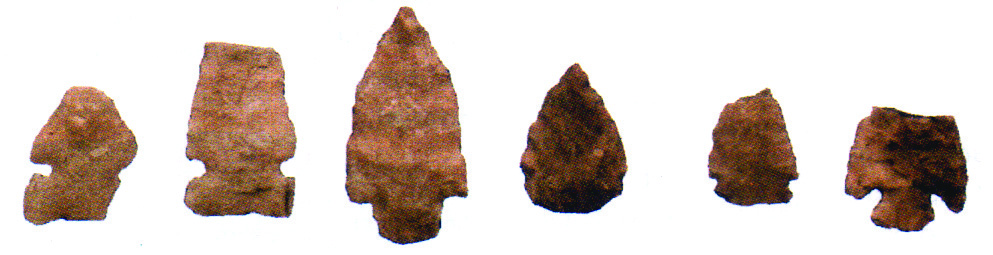
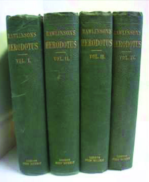
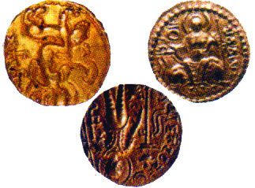
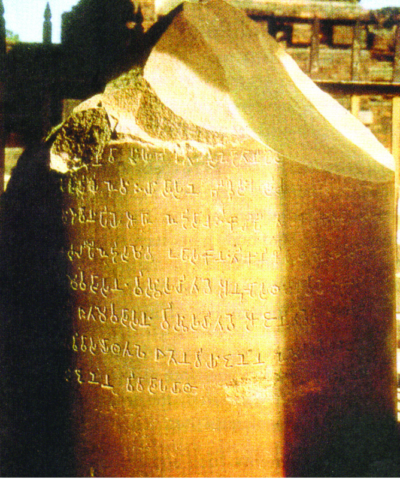
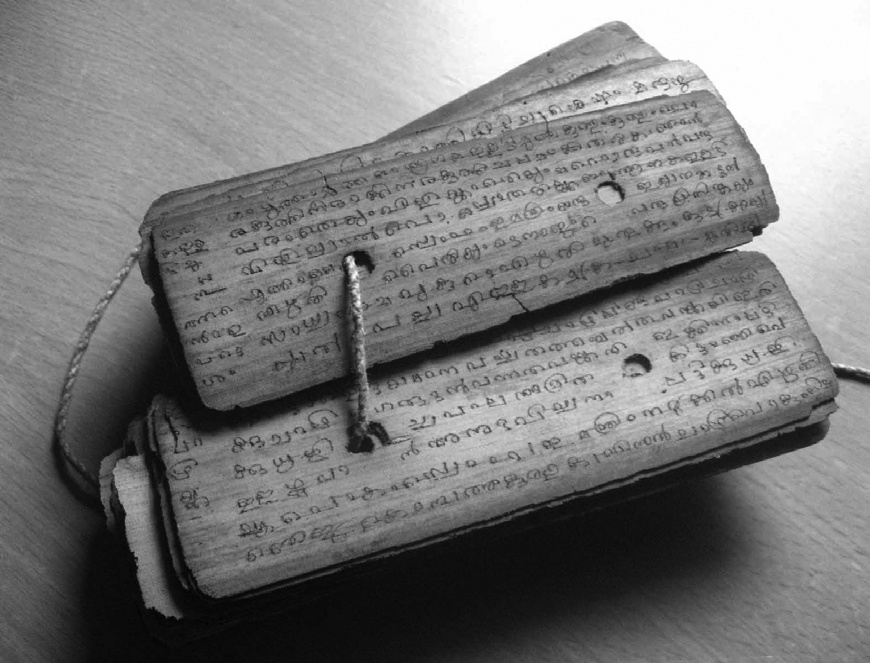
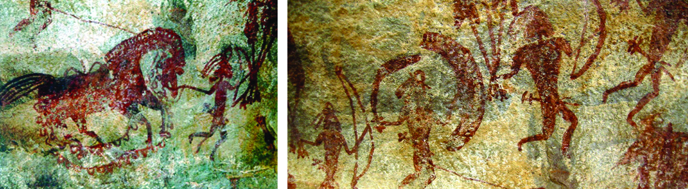
kmaq-ly-imkv{Xw V
kmaq-ly-imkv{Xw V
1010
10
Ncn{XImew
Xmsg sImSp-Øn-cn-°p∂ Nn{X-߃ {i≤n-°p:
Ncn-{Xm-XoXImeØv a\pjy¿ D]tbmKn®ncp∂ I√p]I-c-W-߃
`nwt_ZvI KplmNn{X߃
inem-en-Jn-X-߃
Xmfn-tbm-e-Iƒ
]g-b-Ime \mW-b-߃
]pkvXI߃
Ncn-{Xm-Xo-XIm-esØ t{kmX- p-I-tfm-sSm∏w Ch-bpw Ncn{XcN-\sb
klm-bn-°p-∂p. Fgp-X-s∏´ hnh-c-ß-fmWv Ch-bn¬ \n∂pe`n-°p-∂Xv.
Page 11
Ncn-{X-Øn-te°v
Ncn-{X-Øn-te°v
1111
11
]me-°mSv ]´-W-Øn¬ ÿnXn-sN-øp∂ tIm´-bm-Wn-Xv. Cu tIm´bv°v
200 h¿j-Øn-e-[nIw ]g-°-ap-≠v. \Ωƒ CXv C∂pw kwc£n°p∂p.
Ncn{Xtijn∏pIƒ kwc-£n--°p∂-Xns‚ ImcWw F¥m-bn-cn°pw?
N¿®sNøp.
Ncn-{X-{]m-[m-\y-ap≈ {]tZ-i-߃ kμ¿in®v Hcp Ipdn∏v Xbm-dm-°p.
]me°mSv tIm´
Fgp-X-s∏´ tcJ-I-fp≈ Imew Ncn-{X-Imew F∂-dn-b-s∏-Sp-∂p.
Ncn-{X-Im-ehpw Ncn-{Xm-Xo-X-Im-ehpw XΩn-ep≈ hyXymkw hy‡-am-
°pI.
tijn-∏p-Iƒ kwc-£n°mw
\n߃ ayqknbw I≠n-´p-≈-htcm AXn-s\-°p-dn®v tI´n-´p≈htcm
BWt√m.
Fs¥√mamWv ayqkn-b-Øn¬ kwc-£n-°p-∂Xv?
Ign™ Ime-ß-fn¬ a\p-jy¿ D]-tbm-Kn-®n-cp∂ hkvXp-°tfm
AhbpsS tijn-∏pItfm BWv AhnsS kq£n-°p-∂-Xv.
Ign-™-Im-esØ a\p-jy-cpsS Pohn-X-sØ-°p-dn®v hnh-c-߃ \¬Ip-
∂-Xp-sIm-≠m-Wv Ah kwc-£n-°p-∂-Xv. CØcw hkvXp-°ƒ°p ]pdta
tIm´-Iƒ, sI´n-S-߃, kvamc-I-߃ apX-embhbpw kwc-£n-°s∏Sp∂p.
Page 12
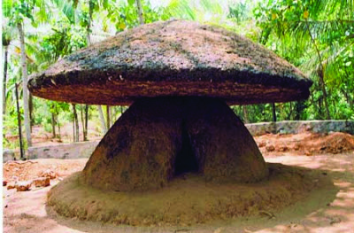
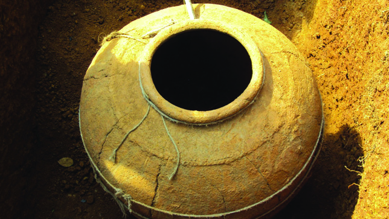
kmaq-ly-imkv{Xw V
kmaq-ly-imkv{Xw V
1212
12
At\z-jn°p ... Is≠-Øp
{]mNo-\-Im-e-Øv tIc-f-Øn¬ \ne-\n-∂n-cp∂ ih-kw-kvIm-c-k-{º-Zmb-
ß-fp-ambn _‘-s∏´ kvamc-I-ß-fpsS Nn{X-ß-fmWv Xmsg \¬In-bn-
´p-≈-Xv. Ah-bpsS t]cpIƒ At\z-jns®-gp-Xp:
hnZym-e-b-Øn-¬ Ncn{Xayqknbw
\nß-fpsS ho´n¬\n∂pw {]tZ-i-Øp-\n∂pw In´m≥ km[y-X-bp≈
Ncn{Xtijn∏pIƒ tiJ-cn®v hnZym-e-b-Øn¬ Hcp Ncn-{X-ayq-knbw
Xbm-dm-°mw.
Fs¥√mw tiJ-cn-°mw?
$
\mWb߃
$
XmfntbmeIƒ
$
]g-b-Ime hnf-°p-Iƒ
Page 13
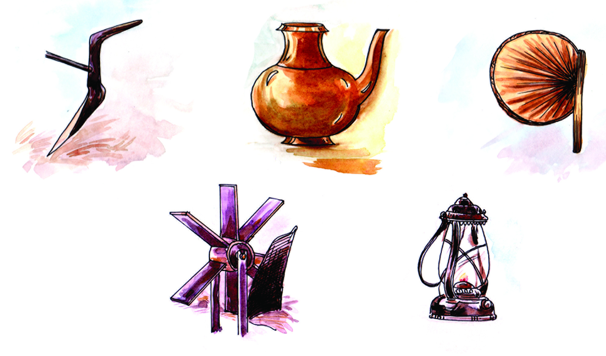
Ncn-{X-Øn-te°v
Ncn-{X-Øn-te°v
1313
13
$
]g-b-Ime ]m{X-߃
$
]g-b-Ime ho´p-]-I-c-W-߃
$
Im¿jntIm]-I-c-W-߃
$
$
$
hnhctiJcWw \SØmw
ap≥ImeØv \ΩpsS \m´n¬ D]tbmKn®ncp∂ Nne hkvXp°fmWv
apI-fnse Nn{XØnep≈Xv. apXn¿∂htcmSv At\zjn®v, AhbpsS
{]m[m\ysØ°pdn®p≈
hnhc߃
tiJcn®v
¢mkn¬
AhXcn∏n°pI.
\ap°pNp‰pw [mcmfw Ncn{Xtijn∏pIfp≠v. Ah hcpwXeapdIƒ°v
ImWm\pw ]Tn°m\pw Ahkcsamcp°Ww. Ncn{XcN\sb
klmbn°p∂ CØcw t{kmX pIƒ \ne\n∂ Imew Xncn®dn™m¬
Ahsb°pdn®p≈ ]T\w hfsc IuXpIIcambncn°pw.
B¬_w Xbm-dm-°mw
Ncn-{X-t{km-X- p-I-fpsS Nn{X-߃ tiJ-cn®v Ipdn-∏p-I-tfm-Sp-IqSn
B¬_w Xbm-dm-°p.
KT 103-2/Soc. Science-5(M) Vol-1
Page 14
kmaq-ly-imkv{Xw V
kmaq-ly-imkv{Xw V
1414
14
500
400
300
200
100
100 200
300
400
500
1
1
F.Un.
_n.kn.
Imew IW-°m-°mw
C¥ybv°v kzmX{¥yw In´nb
h¿jw GXmWv? 1947 BWt√m.
tIc-f- kw-ÿm\w \ne-hn¬
h∂Xv -1956˛¬ BWv.
kzmX{¥yw In´n- F{X h¿jw
Ign-™mWv tIc-f -kw-ÿm\w
cq]w-sIm-≠Xv?
1930˛¬ BWv Km‘nPn D∏pkXy-{Klw \SØnbXv.
kzmX{¥yw In´p-∂Xn\v F{X h¿jw apºmWv D∏pkXy-{Klw \S-∂Xv?
Ime-K-W-\ \S-Øp-∂-Xn-\mbn kzmX{¥yw In´nb h¿j-sØ-bmWv
\Ωƒ ChnsS ASn-ÿm-\-am-°n-b-Xv.
C∂v temIØv s]mXp-hmbn Ime-K-W-\bv°v D]-tbm-Kn-°p-∂Xv {InkvXp-
h¿j-am-Wv. tbip-{In-kvXp-hns‚ P\-\sØ ASn-ÿm-\-am°n ImesØ
F.Un., _n.kn. F∂nßs\ hn`-Pn-®n-cn-°p-∂p. {InkvXp P\n®-Xn\p-
tijap≈ Imew F.Un. (Anno Domini) F∂pw {InkvXp P\n°p∂Xn\p
apºp≈ Imew _n.kn. (Before Christ) F∂pw Adnbs∏Sp∂p. Cu Ime-
K-W\ Ct∏mƒ bYm-{Iaw CE (Common Era), BCE (Before Common Era)
F∂pw {]tbm-Kn-°m-dp≠v.
Anno Domini
em‰n≥ `mj-bn-ep≈ Cu ]Z-Øns‚
A¿Yw In the year of our Lord's
birth F∂mWv. tbip-{In-kvXp-hns‚
P\\-h¿j-Øn¬ F∂mWv CXv
kqNn∏n°p∂Xv.
_n.kn.bpw F.Un.bpw Xncn-®-dn-bm≥ klm-bn-°p∂ Nn{X-amWv apIfn¬
\¬In-bn-cn-°p-∂-Xv.
Page 15
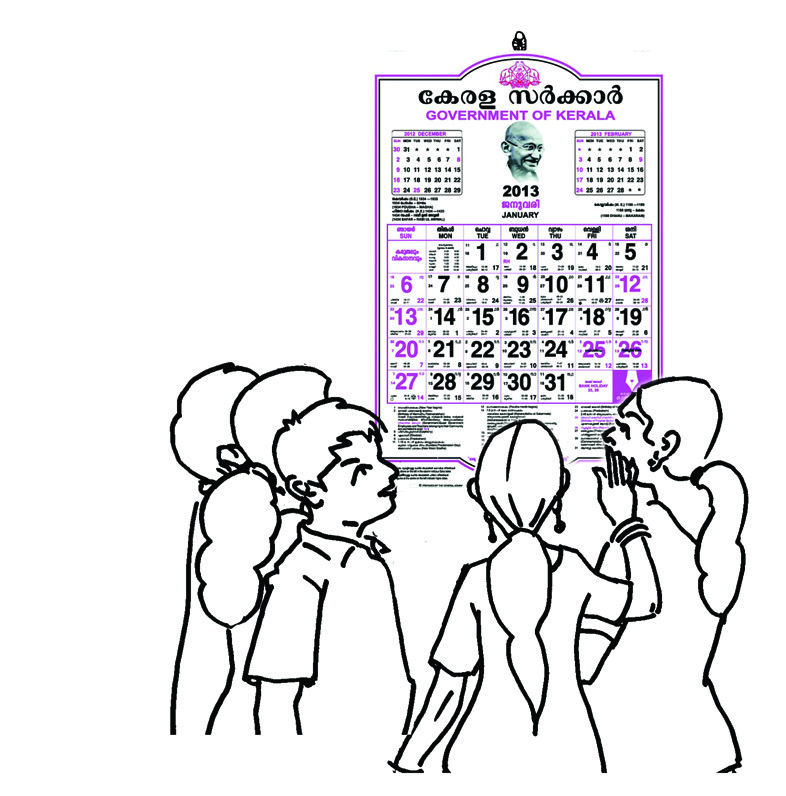
Ncn-{X-Øn-te°v
Ncn-{X-Øn-te°v
1515
15
Ie-≠¿ t\m°mw
Ie≠dn¬ GsX√mw h¿j-{I-a-ß-fmWv tcJ-s∏-Sp-Øn-
bn-cn-°p-∂-Xv? Is≠Øn FgpXp:
$
{InkvXp-h¿jw
$
$
$
\q‰m≠v IW-°m-°mw
\Ωƒ GXp \q‰m-≠n-emWv Pnhn-°p-∂Xv? 21˛mw \p‰m-≠n-¬
21˛mw \q‰m≠v Bcw-`n-®Xv F∂papX-em-Wv?
Hcp \q‰m≠v F∂Xv \qdv h¿j-am-Wv. DZm-l-c-W-Øn\v F.Un. H∂v
apX¬ \qdp hsc-bp-≈Xv H∂mw \q‰m-≠m-Wv. F.Un. 1901 apX¬ 2000
hsc-bp-≈Xv 20˛mw \q‰m≠v. CXv Nn{Xo-I-cn-®n-cn-°p-∂Xv t\m°p.
Xmsg ]d-bp∂ h¿j-߃ GXp \q‰m-≠n-emsW∂v Is≠-Øp:
h¿jw
\q‰m≠v
F.Un. 2014
F.Un. 1947
F.Un. 1857
261 _n.kn.
326 _n.kn.
Ncn{X]T\Øn¬ F∂v, Ft∏mƒ F∂o tNmZy߃ hfsc
{][m\amWv. AXn\pØcw Is≠Øm≥ ImeKW\ \sΩ
klmbn°p∂p. ImeKW\bpw Imet_m[hpw Ncn{X]T\Øn\pw
Ncn{XcN\bv°pw Hgn-®p-Iq-Sm-\m-h-mØXmWv.
1-1-1901
31-12-2000
20˛mw \q‰m≠v
21˛mw \q‰m≠v
19˛mw \q‰m≠v
Page 16

kmaq-ly-imkv{Xw V
kmaq-ly-imkv{Xw V
1616
16
kw{Klw
$
a\pjy¿ Imeßfmbn B¿Pn® ]ptcmKXnbpsS tcJs∏SpØ-
emWv Ncn-{Xw.
$
{]mNo-\-Im-eØv a\p-jy¿ D]-tbm-Kn-®n-cp∂ D]-I-c-W-߃, \mWb-
߃, ]m{X-߃, tijn-∏p-Iƒ, Fgp-X-s∏´ tcJ-Iƒ apXembh
Ncn{XcN-\-sb klm-bn-°p∂ sXfn-hp-I-fm-Wv.
$
Fgp-X--s∏´ tcJ-I-fp≈ Imew Ncn-{X-Im-esa∂pw AXn\papºp≈
Imew Ncn-{Xm-Xo-XImesa∂-pw Adn-b-s∏-Sp-∂p.
$
ImesØ F.Un.-, _n.kn. F∂n-ßs\ c≠mbn Xncn®ncn°p∂p.
(Ct∏mƒ bYm-{Iaw CE, BCE F∂pw {]Xn-]m-Zn-°p-∂p)
{][m\ ]T-\-t\-´-ßfn¬ s]Sp∂h
hne-bn-cp-Ømw
$
Ncn-{X-c-N-\bv°v klm-bn-°p∂ hnhn[ sXfn-hp-Iƒ ]´n-I-
s∏SpØpI.
$
NphsS X∂n-´p-≈-Xn¬\n∂v Ncn{XImesØbpw Ncn-{Xm-XoX-
ImesØbpw t{kmX- p-Iƒ Is≠-Øn XcwXncn°pI:
$
\mW-b-߃
$
Kplm-Nn-{X-߃
$
inem-bp[߃
$
Xmfn-tbm-e-Iƒ
$
]pkvX-I-߃
$
ÃmºpIƒ
$
]pcmX\ a¨]m{X߃
$
Ncn{Xw sXfn-hp-I-fpsS ASn-ÿm-\-Øn-emWv cNn-°-s∏-Sp-∂Xv
F∂v hniZoIcn°p∂p.
$
Ncn{XImehpw Ncn{XmXoXImehpw th¿Xncn®v hy‡am°p∂p.
$
F.Un.-, _n.kn. F∂ Ime-K-W-\bpw \q‰m-≠v F∂ Bibhpw
A]{KYn°p∂p.
$
Ncn-{X-ti-jn-∏p-I-fpsS kwc-£-W-Øns‚ Bh-iy-IX
hy‡am°p∂p.
$
{]mtZ-inINcn-{X-c-N-\-bv°p≈ tijn t\Sp-∂p.
Page 17

Ncn-{X-Øn-te°v
Ncn-{X-Øn-te°v
1717
17
$
\nß-fpsS {]tZ-i-Øp≈ GsX-¶nepw Ncn-{Xtijn∏pIƒ (tIm´-
Iƒ, sI´n-S-߃, Ipf-߃, {]Xn-a-Iƒ apX-em-b-h) kμ¿in®v
AhbpsS kwc-£-W-Øn-\p-th≠n \S-Øp∂ {]h¿Ø-\-߃
Fs¥√m-amsW∂v At\z-jn®v Ipdn∏v Xbm-dm-°p.
$
]e Ime-L-´-ß-fn-ep≈ \mWb߃ ]cn-tim-[n-°p. AXn¬\n∂p
Is≠-Øm-hp∂ hnh-c-߃ ]´nIcq]Øn¬ {IaoIcn°pI.
$
Ncn{Xkvamc-I-߃ kwc-£n-°Wsa∂v Bh-iy-s∏-Sp∂ t]mÿ
Xbm-dm-°p.
$
\nß-fpsS {]tZ-iØv \ne-\n-∂n-cp∂ \m´-dn-hp-Ifpw \mS≥
]m´pIfpw sFXn-ly-ßfpw apXn¿∂-h-tcmSv tNmZn-®-dn-bp-I. Cu
AdnhpIƒ Dƒ∏-SpØn Hcp ]Xn∏v Xbm-dm-°p.
$
Ncn-{X-kvam-c-I-ß-fp-ambn _‘-s∏´ Nn{X-߃, hm¿Ø-Iƒ,
]cky߃ F∂nh tiJ-cn-®v hm¿Øm-t_m¿Un¬ {]Z¿in-
∏n°pI.
XpS¿{]h¿Ø-\-߃
Page 18
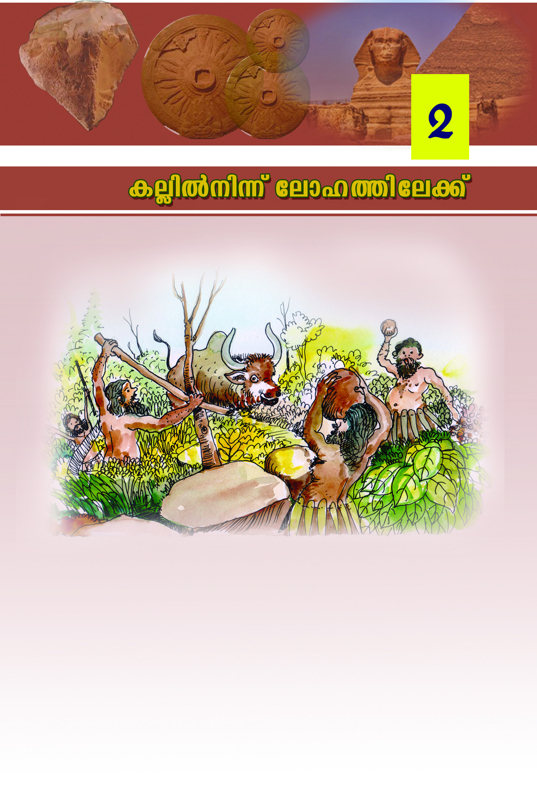
kmaq-ly-imkv{Xw V
1818
18
kmaq-ly-imkv{Xw V
{]mNo-\- a\p-jyPohnXw ˛ Nn{X-Im-cs‚ `mh-\-bn¬
{]mNo-\-Im-esØ a\p-jy-Po-hn-X-hp-ambn _‘-s∏´ Nn{X-amWv apI-
fn¬ ImWp-∂-Xv. AXn¬\n∂v Fs¥√mw Imcy-߃ Is≠Ømw?
$
a\p-jy¿ ]pcm-X-\-Im-eØv Im´n-emWv Xma-kn-®n-cp-∂-Xv.
$
$
a\pjy¿°v B\-bp-tS-Xp-t]mse henb ico-ctam ]pen-bptSXp-t]mse
Iq¿Ø \J-ßtfm Im´pt]mØns‚ IcptØm C√. AXn-\m¬
Page 19
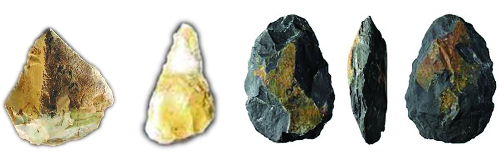
I√n¬ \n∂v teml-Øn-te°v
19
19
19
I√n¬ \n∂v teml-Øn-te°v
Blmcw kºm-Zn-°m\pw arK-ß-fn¬ \n∂v c£-t\-Sm\pw BZna a\p-
jy\v D]-I-c-W-ßfpw Bbp-[-ßfpw Bh-iy-am-bn-cp-∂p.
CXn-\mbn BZn-a-a-\p-jy¿ D]-tbm-Kn-®n-cp-∂Xv I√v (ine) Bbncp∂p.
BZnaa\p-jy-cpsS Pohn-XsØ kzm[o-\n® Hcp {][m\ hkvXp-
hmbncp∂p ine. AXn-\m¬ Cu Ime-L´w inem-bpKw F∂-dn-b-
s∏Sp∂p.
{]mNo-\-in-em-bpKw (Palaeolithic Age)
{]mNo-\-inem-bp-[-߃
BZn-a-a-\p-jy¿ D]-tbm-Kn-®n-cp∂ ]cp-°≥ I√p-I-fmWv Nn{X-Øn¬
ImWp-∂-Xv.
Ah F¥n-s\m-s°-bm-bn-cn°pw A°m-esØ a\p-jy¿ D]-tbm-Kn-®n-
cp∂Xv?
$
arK-ßsf th´-bm-Sm≥
$
arK-ß-fn¬\n∂v c£-t\-Sm≥
$
Im´p-In-g-ßp-Iƒ Ipgn-s®-Sp-°m≥
$
Bbp-[-ßfpw D]-I-c-W-ß-fp-ambn ]cp-°≥ I√p-Iƒ D]-tbm-Kn® Cu
ImeL´sØ {]mNo-\-in-em-bpKw F∂p hnfn-°p-∂p.
Kpl-I-fn-em-bn-cp∂p A°m-esØ a\p-jy-cpsS Xma-kw. Im´n¬\n∂v
In´p∂ Ing-ßp-Ifpw ]g-ßfpw th´-bm-Sn-°n-´p∂ arK-ß-fpsS amwkhpw
Ah¿ `£-W-ambn D]-tbm-Kn®p. A°m-e-ØmWv a\p-jy¿ Xo D]-
tbm-Kn-°m≥ XpS-ßn-b-Xv.
Page 20
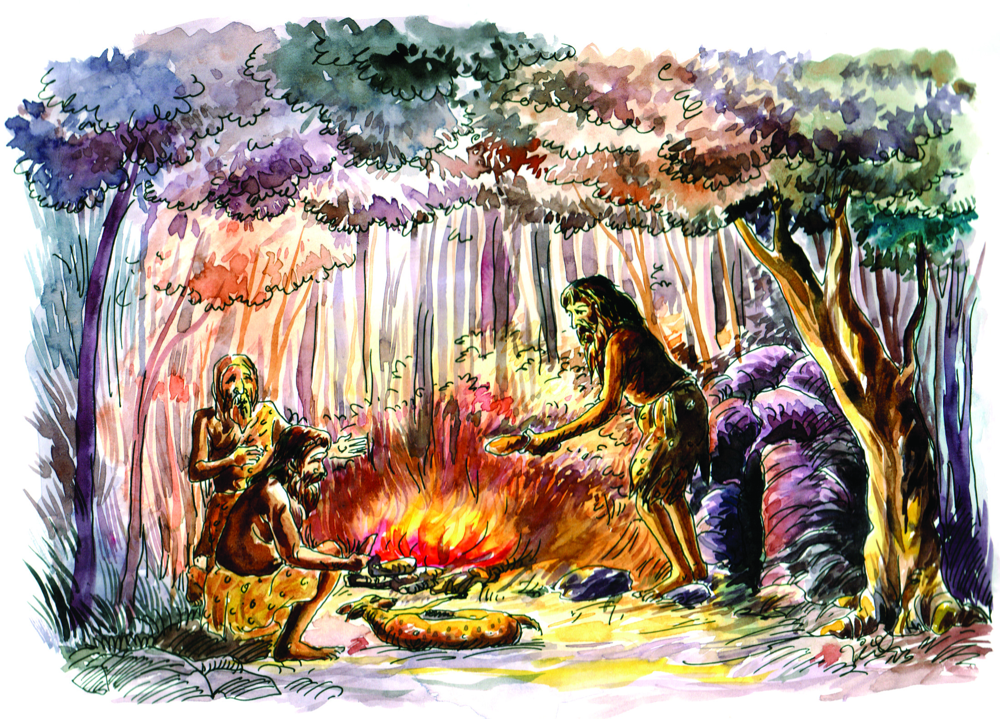
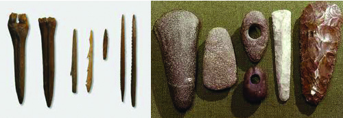
kmaq-ly-imkv{Xw V
2020
20
kmaq-ly-imkv{Xw V
BZn-a-a-\p-jy¿ F¥n-s\m-s°-bm-bn-cn°pw Xo D]-tbm-Kn-®n-´p-≠m-hpI?
N¿® sNøp.
$
$
\ho-\-in-em-bpKw (Neolithic Age)
{]mNo-\ a\p-jy≥ Xo D]-tbm-Kn-°p-∂p-˛-Nn-{X-Im-cs‚ `mh-\-bn¬
Nn{X-Øn¬ ImWp∂ Xc-Øn-ep≈ Bbp-[-ß-fmWv ]n¬°m-eØv a\p-
jy¿ D]-tbm-Kn-®n-cp-∂-Xv. Chbv°v {]mNo-\-in-em-bp-K-Ønse Bbp-[-
ß-fn¬ \n∂v F¥p hyXym-k-am-Wp-≈Xv?
$
IqSp-X¬ aq¿®-bp-≈-h-bmWv
$
an\p-k-s∏-Sp-Øn-b-h-bmWv
\ho-\-in-em-bp-[-߃